← 返回阅读库 · 原论文目录
论文讲解阅读文档 · 新模型 · v059
Exploring Self-attention for Image Recognition[2004.13621]
视频时长 00:16:30；讲解文字 6,693 字符；提取讲解画面 53 张。按视频原顺序阅读，每段文字保留时间戳。
文字来自整段视频的自动语音转写，按自然停顿分段，并与 PPT / 论文页面 / 演示画面对齐。未将讲解压缩为摘要；术语、数字和口述公式请结合画面及原论文核对。 阅读稿已校正规范部分明确术语误识别；原始逐字稿和每处修改记录另行保留。
讲解画面为源视频截图（640×360），不是可编辑 PPT 文件。全片按每秒 2 帧扫描内容变化，逐步展开页保留；连续动画保留代表画面。清晰度受源视频限制。
下载完整资料包 · 含离线 HTML、PDF、Word、全部 PPT 画面和字幕。
原论文与材料
Exploring Self-attention for Image Recognition · 下载完整 PDF（10 页）
按时间阅读
00:00:00–00:00:21 · 画面 001
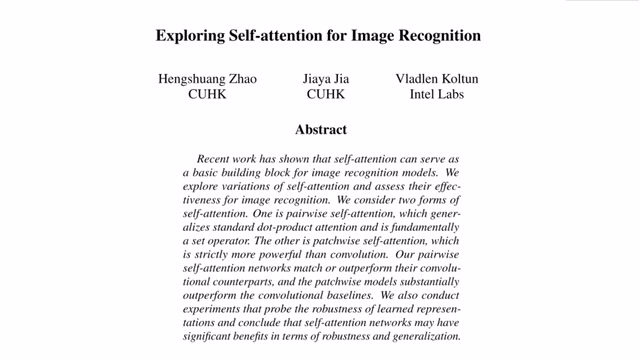
00:00:00–00:00:21 · 画面 001大家好,今天我们来介绍 Exploring Self-Attention for Image Recognition 这篇论文。那么从题目上我们也可以看出来，这篇论文呢,讲述的就是 Self-Attention 这个机制。那么更具体来说,本文探讨了两种 Self-Attention 机制。那么这些机制呢,会被用来替代我们现在所有的 Convolutional Layers。那么经过很多的实验证明呢,这种替换是可以增强我们网络的鲁棒性和它的泛化性能的。
00:00:21–00:00:28 · 画面 002
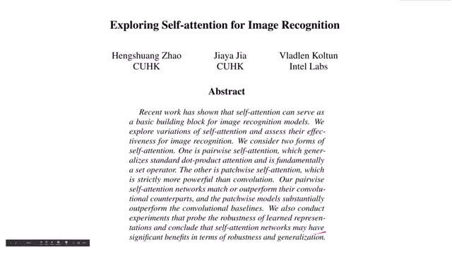
00:00:21–00:00:28 · 画面 002那么在这个视频中我们会首先介绍 self-attention 自注意力机制它背后驱动的核心的思想或者说是它为什么能 work 的一种解释那么随后我们会介绍两种形式的 self-attention 一种是 pairwise 也就是每一个像素之间的像素级别的 self-attention 另一种是 patchwise
00:00:28–00:01:04 · 画面 003
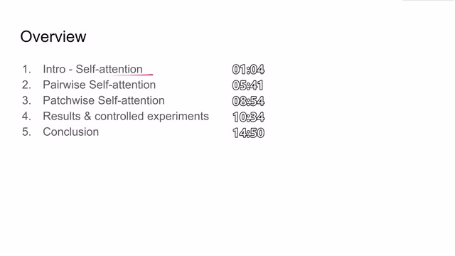
00:00:28–00:01:04 · 画面 003也就是两个图像块之间的 attention 机制那么最后呢是作者汇报的实验结果以及作者做的各种控制实验来帮助我们选择如何构建一个好的 attention 的机制以及最后本文得出的结论那么应该如何理解这个自注意力机制 self attention 呢这里呢我就介入本文原作者在介绍这篇论文的时候的一个视频具体信息地址大家可以看这里那么简单来说呢就是
00:01:04–00:01:11 · 画面 004
00:01:04–00:01:11 · 画面 00400:01:11–00:01:12 · 画面 005
00:01:11–00:01:12 · 画面 00500:01:12–00:01:19 · 画面 006
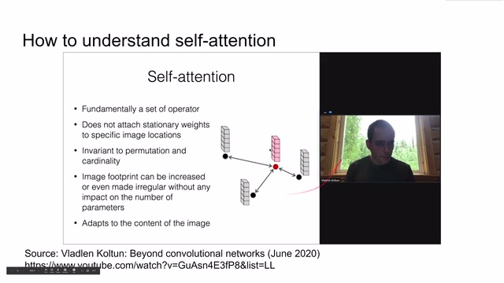
00:01:12–00:01:19 · 画面 00600:01:19–00:01:20 · 画面 007
00:01:19–00:01:20 · 画面 007我们现在有很多的样本那么传统的我们使用 convolutional neural network 提取出的图像的特征虽然它能够很好的表达或者说描述我们输入样本中图像的信息像这样比如说我们输入一个这个红色的点是我们的输入样本那么可能我们的卷积时间网络提取出来的呢就是这一叠信息或者说一叠特征向量那么不同的样本我们可以提出不同的特征
00:01:20–00:02:08 · 画面 008
00:01:20–00:02:08 · 画面 008但是呢这些样本之间它们之间的相互的关系它们在 latent space 一个高位的空间或者说是甚至更抽象一点在我们语义空间上它们之间的相互关系是没有办法很好的通过这些描述图像内容的 feature 来很好的表达的那么这个时候呢我们就引入了 attention mechanismattention 相当于什么呢 attention 相当于说我不仅会提取关于图像内容的 feature
00:02:08–00:02:13 · 画面 009
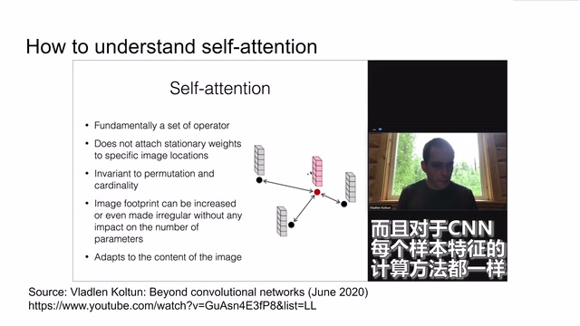
00:02:08–00:02:13 · 画面 00900:02:13–00:02:28 · 画面 010
00:02:13–00:02:28 · 画面 010同时呢我还会去关注各个样本之间它们之间的关系而如何表达这种关系呢我们使用普通的这种神经网络把所有的样本投到一个更高维的空间就像我们现在这个图里所在的这个样子这个 latent space 呢是一个抽象的不同于像图像中提取的特征 CNN 提取这些 feature 是另外一种表达而在这个 latent space 当中呢两个样本之间的距离
00:02:28–00:02:33 · 画面 011
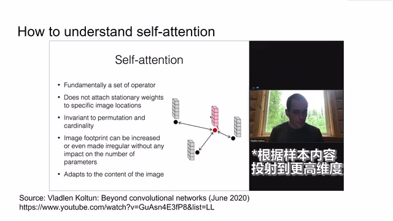
00:02:28–00:02:33 · 画面 01100:02:33–00:04:10 · 画面 012
00:02:33–00:04:10 · 画面 012或者说是一个样本与其他各个样本之间的相对距离的关系描述了这个样本和其他样本之间的关系在引入了这样一个 latent space 之后我们就可以通过更加全局的角度更加泛化的角度来去理解这个图像中的内容那么比如说在引入 attention 之后我想描述这个红色的样本之间它的内容首先我们可以使用的就是它本身根据这个内容本身它提取出的 feature 那么同时呢我们可以看到比如说红色的点距离这个点它们之间存在一定的关系它们比如说它们在 latent space 之间靠的相对较近那么它们之间存在一定的关系那么当我描述红色的这个样本的时候呢我可以一定权重的使用这个样本
它的特征向量用来参与贡献到对于红色样本的描述中那么同样的这个向量它离的比这个样本要近可能它的权重会更大一些那么这样通过注意力的机制我们不仅能够解析出这一个样本本身它自己的所有特征同时我们的特征的描述特征的表达还可以涉及到这个样本以及它周围各个样本通过加权之后得到的这个特征的信息也就是说相对于传统 CNN 它连接构建特征之间的关系呢更加的泛滑也就是说它比普通的 CNN 有着更加灵活的观察全局的能力当然了完全的自由完全的灵活在实际的工程中可能
00:04:10–00:04:14 · 画面 013
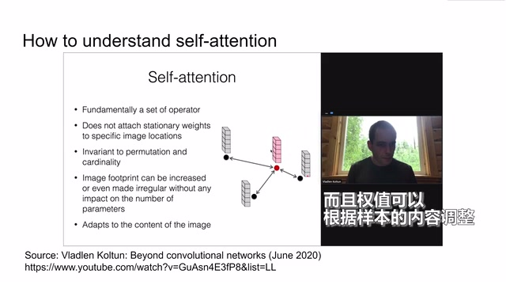
00:04:10–00:04:14 · 画面 01300:04:14–00:05:42 · 画面 014
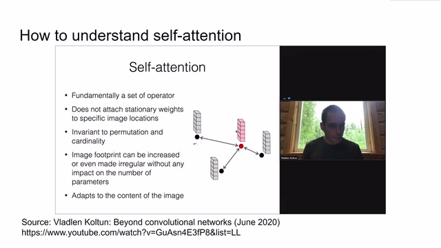
00:04:14–00:05:42 · 画面 014目前来讲并不是那么可靠，就像为什么我们不搭一个非常深的全是由全连接层连接的网络来做我们的工作呢？因为那样的连接它的自由度太高，很容易就陷入 overfit 的状态，无法有效的学习到这些样本它本质的 distribution。那么相比之下，为什么 convolution 能 work、convolution 和全连接相比，它本质上是削减了很多的自由度的这些削减的自由度其实就是我们鲜艳的给这个模型增加的约束我们假设图像的局部之间是存在关联的所以我们使用选机这个鲜艳那么同样的本文认为 attention 也是一种削减模型自由度的机制那么在后面的介绍中我们看到每一个 attention block 是如何构建起来的而且作者的实验也表明只使用 attention 机制的这么一个 network 其实是可以达到和 convolution 相媲美的效果
作者当然也开玩笑说，可能在另一个世界我们率先发现了 attention，那么 attention 在另一个世界可能相当于 convolution 的作用。那么本质上其实它们都是通过给模型增加一定的先验的约束，使得这个模型可以被训练，可以学到有效的东西。好的，那么下面我们来介绍本文提出的两种 attention 机制，首先是 pairwise、pairwise 就是一个图像中像素与像素之间的 attention 的关系
00:05:42–00:07:42 · 画面 015
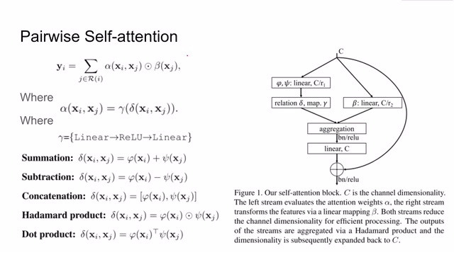
00:05:42–00:07:42 · 画面 015那么当然随着我们层数的叠高在第二层我们可能就不叫它这个叫图像了它可能是一个 feature map 这里的 xi 和 xj 就是我们 feature map 中两个不同的像素当然每个像素背后可能都拖着一长串的一个 vector 作为整个这个像素代表的 feature 那么如何构建 attention 也就是说 attention block 输出是什么对于一个输入的 feature map 那么它首先对所有的 i 和 j用一个α然后再得到了这个向量同时把 xj 送入到β函数中那么在这之后是α和β两个得到的向量它们的元素在对应位置上相乘那么使用不同的 j 重复这个操作这样就使得 xi 和这一个 feature map 中的所有的 xj 都计算出这么一个值然后把这个值加起来
就是过了 attention block 之后在 i 这个位置上我们输出的新的 feature 那么我们仔细来看这个公式中α和β代表了什么呢这里αxi 和αxj 这里作者把它拆分成了γ和Δxi 和 xj 那有的朋友看到这个公式可能第一反应您这可真您这呢这不什么都没讲吗那么我们继续往下看那么其中γ呢可以是一个常见的这个 linear layer 加上集合函数再加 linear layer 这么一个构型而这个 delta 函数呢我们就可以有很多种花样了在这个 delta 函数中呢首先我们 xi 和 sj 进行一定的特征的转换比如说这里使用的 fi 和这里使用的 sci 在得到了 fi xi 和 sci xj 之后呢我们有很多种方法能够把这两个 vector 给它组合起来比如说这种想加和想减想直接把它们串接起来或者是它们对应元素相乘得到一个新的 vector
00:07:42–00:07:50 · 画面 016
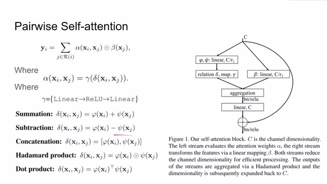
00:07:42–00:07:50 · 画面 01600:07:50–00:07:51 · 画面 017
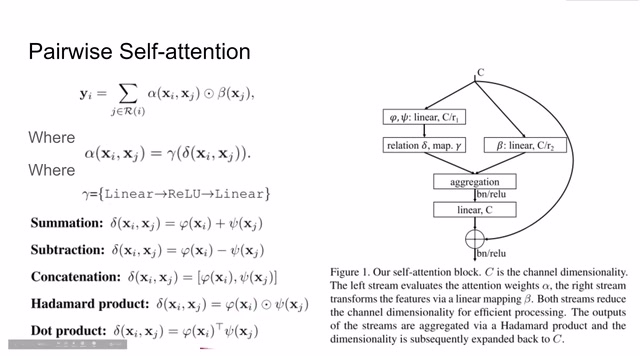
00:07:50–00:07:51 · 画面 017以及做一个点积，那么因为 xi 和 xj 它们的 vector 的长度是相同的，所以点积之后它们出来的就是一个值，就是一个数值。那么我们来到右边更直观的解释一个 attention block 它的结构，对于一个输入的 C 来说，左边这一只就是α，右边这只就是β。对于β我们好理解，相当于直接套几层 linear layer，就把这个 C 转换到这里了
00:07:51–00:07:55 · 画面 018
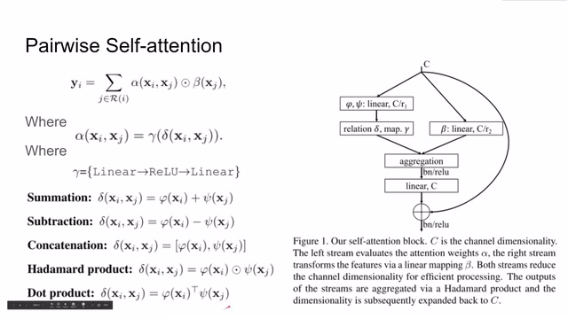
00:07:51–00:07:55 · 画面 01800:07:55–00:07:56 · 画面 019
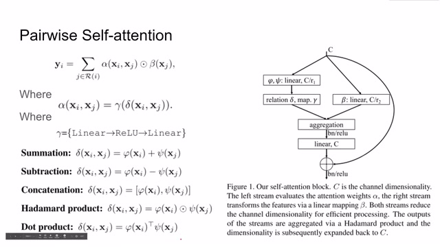
00:07:55–00:07:56 · 画面 01900:07:56–00:07:58 · 画面 020
00:07:56–00:07:58 · 画面 02000:07:58–00:08:02 · 画面 021
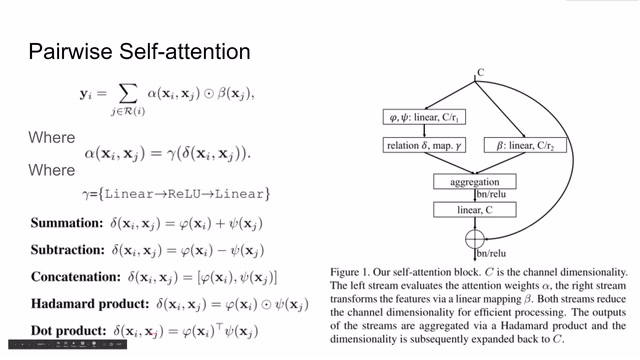
00:07:58–00:08:02 · 画面 02100:08:02–00:08:06 · 画面 022
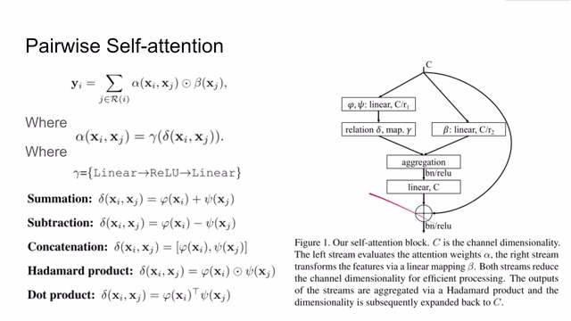
00:08:02–00:08:06 · 画面 02200:08:06–00:08:25 · 画面 023
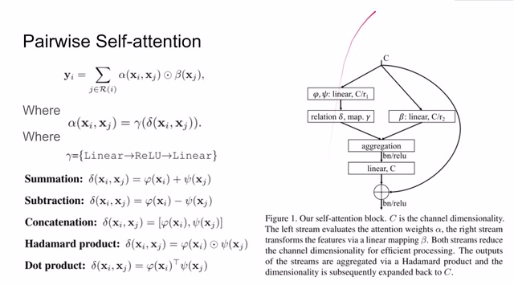
00:08:06–00:08:25 · 画面 023那么对于这一只 alpha 来说首先我们会把 x 送入相应的 fi 和 sci 当中那么得到这些 feature 在使用我们这里提及的各种 aggregation 的方法那么最终我们得到 alpha xi 和 xj 它这边的输出最后我们把这两只输出结合起来用 batch normalization 加上激活函数给它再次进行一个变形同时再加上原始的输入 c 就像一个残差网络一样那么这样就形成了一个 attention block
00:08:25–00:08:26 · 画面 024
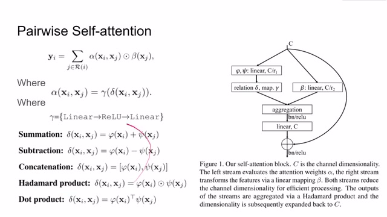
00:08:25–00:08:26 · 画面 02400:08:26–00:08:44 · 画面 025
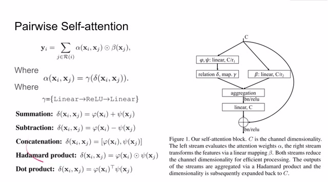
00:08:26–00:08:44 · 画面 02500:08:44–00:08:45 · 画面 026
00:08:44–00:08:45 · 画面 02600:08:45–00:08:55 · 画面 027
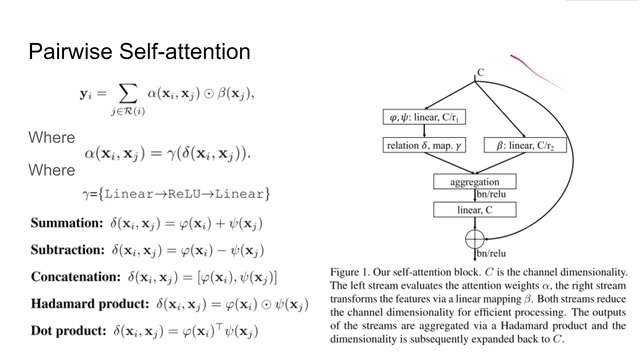
00:08:45–00:08:55 · 画面 027那么这个 block 也可以像 resnet 里面的这些残差网络一样一层一层的来给它叠加起来那么与 pairwise 相类似作者还提出了 patchwise 思想和 pairwise 不同的是这里的 x 有一个像素变成了一个一个的图像的块也就是变成一个个 patch 但是核心的思想也是一样的一个输入进来之后我们分出两个针然后再把它们集合起来对吧左右手互搏再连上残杀
00:08:55–00:09:39 · 画面 028
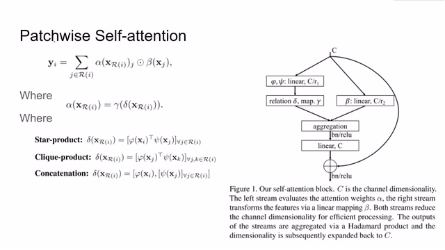
00:08:55–00:09:39 · 画面 028那么在这里呢，我们面对的是两个 patch，所以呢，这里使用的 delta 的方法也有不同，所以呢，列举了作者研究的这种三种方法。那么值得注意的是，无论是之前的 pairwise 还是 patchwise，这个 attention block 里面呢，它里面都没有卷积的操作，也就是说呢，作者完全使用 linear 的这个构造来替换掉了原来的 convolution。那么作者在这里列举了三种不同大小的 attention block
00:09:39–00:09:46 · 画面 029
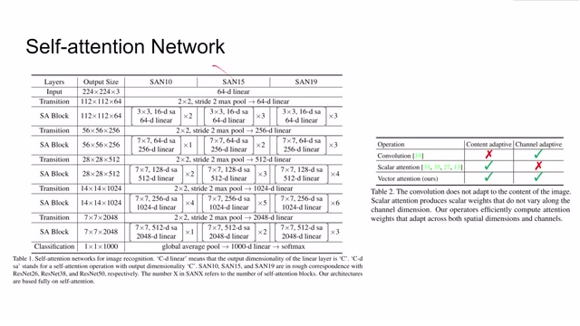
00:09:39–00:09:46 · 画面 029这是它们对应的基本配置。这里作者也说了，它们的网络是完全基于 self-attention，也就是说没有 convolution 在里面。同时作者也说，因为传统的 convolution 它是训练出一个 kernel，那么这个 kernel 只是一个无情的 feature extractor，它无法根据图像的内容来调整自己
00:09:46–00:09:47 · 画面 030
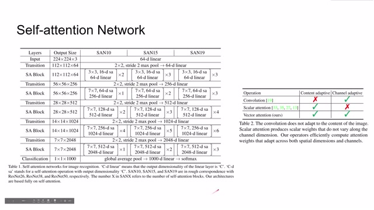
00:09:46–00:09:47 · 画面 03000:09:47–00:09:49 · 画面 031
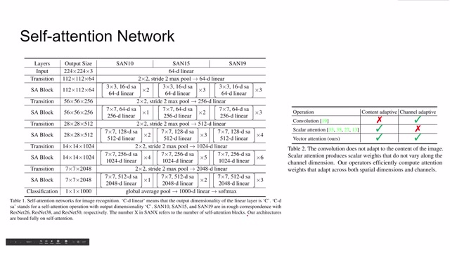
00:09:47–00:09:49 · 画面 03100:09:49–00:09:55 · 画面 032
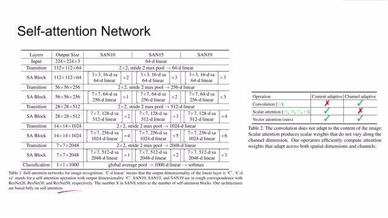
00:09:49–00:09:55 · 画面 03200:09:55–00:10:23 · 画面 033
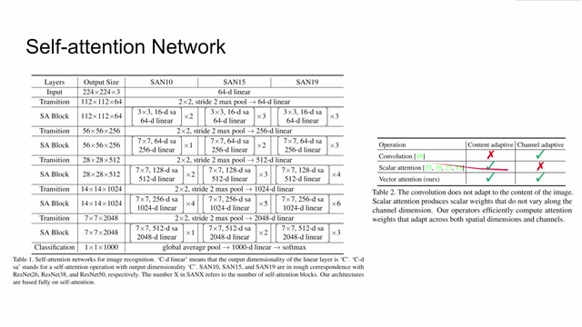
00:09:55–00:10:23 · 画面 033那么如果我们在每次 attention 之后只输出一个值，那么这个值虽然能够对 attention block 里面的图像里面的内容有所适应，但是它又不能适应这个图像，它有这么多的 channel，这么多的 features。那么当然，本文提出的 attention 是一个 vector，每次传递的 attention 是一个 vector，这样子它就可以保持这两种模型都有的优点了
00:10:23–00:10:34 · 画面 034
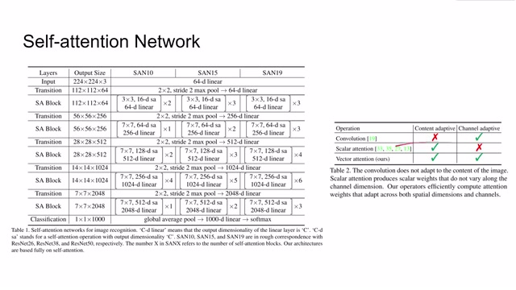
00:10:23–00:10:34 · 画面 03400:10:34–00:11:35 · 画面 035
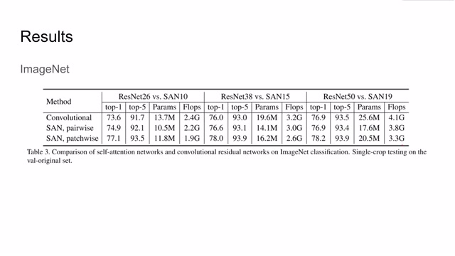
00:10:34–00:11:35 · 画面 035然后我们来到 ImageNet 的结果。那么这里作者对比了 Self-Attention Network 和对应参数量和计算量相似的 Convolutional Neural Network，它们的表现可以看到，Self-Attention Network 特别是 Patchwise 的 Self-Attention 它的表现都是优于 Convolutional Network那么 Pairwise 和 Convolutional 持平现在有些时候能够超过 Convolutional 的表现而且我们观察到虽然它们的参数和计算量相近但是使用 attention 其实还是比 Convolutional
要少这么一些计算量少这么一些参数量的当然虽然拿到代码之后我们试了一下发现本文提出的 attention 并没有比 Convolution 在速度上快很多这主要也是因为我们现在的 GPU 对 Convolution 做的优化已经是非常好了而对 attention 就没有特别的优化所以说这也是可以理解的事情但是相对来说它使用的参数量和计算量都是相对较少的
00:11:35–00:11:52 · 画面 036
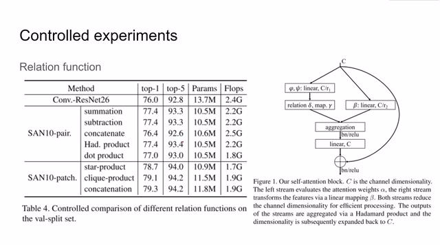
00:11:35–00:11:52 · 画面 036那么下面就是本文含金量最高的环境也就是刚刚我们介绍了说这么多种 relation function 这么多种实现 attention mechanism 的方法那么怎样实现是一个好的实现呢首先这里作者测试了不同的 relation function 也就是当使用 pairwise 时我们记得这里有各种来连接 xi 来连接 5xy 和 4x3 它们之间的方法那么这些方法哪一个效果最好呢
00:11:52–00:11:56 · 画面 037
00:11:52–00:11:56 · 画面 03700:11:56–00:12:00 · 画面 038
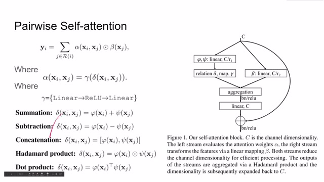
00:11:56–00:12:00 · 画面 03800:12:00–00:12:04 · 画面 039
00:12:00–00:12:04 · 画面 03900:12:04–00:12:06 · 画面 040
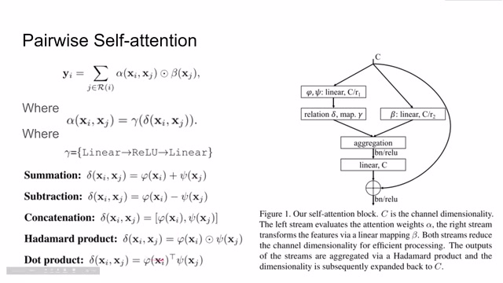
00:12:04–00:12:06 · 画面 04000:12:06–00:12:14 · 画面 041
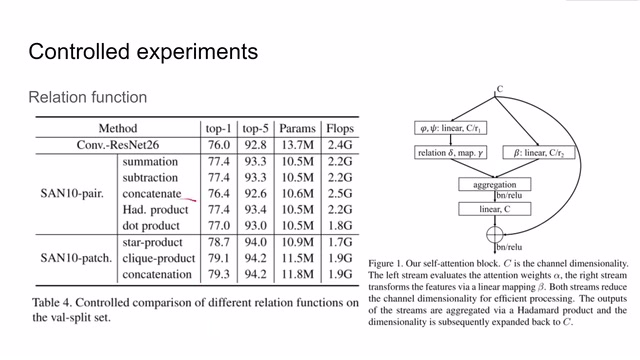
00:12:06–00:12:14 · 画面 041那么作者在这里使用控制变量的方法来给出个答案，也就是这里的 relation function，也就是更换 delta 这里的结果。那么随后作者又测试了 mapping functionmapping function 就是这里的 gaba。这里作者测试了使用一层线性层，两层线性层中间加了一个 relu 激活函数，三层线性层它们之间的性能的差距。那么这里作者也汇报出了结果
00:12:14–00:12:38 · 画面 042
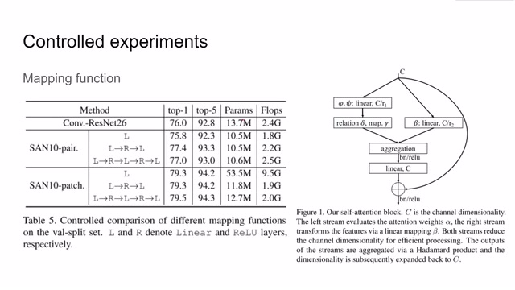
00:12:14–00:12:38 · 画面 04200:12:38–00:12:43 · 画面 043
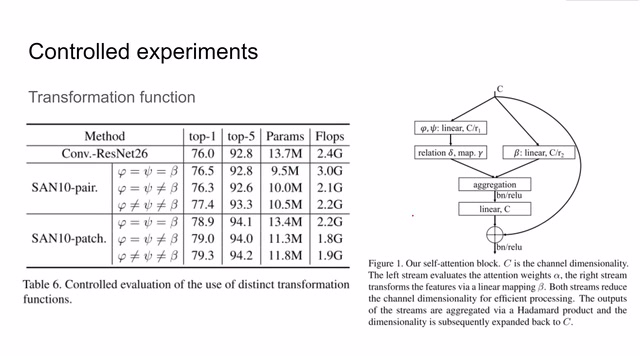
00:12:38–00:12:43 · 画面 043那么在这之后呢，作者还探讨了 transformation function，也就是这里的 sci 和 fi 还有这个 beta 他们之间的关系对于最后结果的影响。那么我们可以看到，哪怕这三者相等，这个网络还是能够学到一些东西的，而且甚至比这个 resnet 都要好。但是呢，如果我们让这三者不一样，他们就会学到不同的东西，那么效果呢，会更大幅度的 outperform 原来的 resnet
00:12:43–00:12:44 · 画面 044
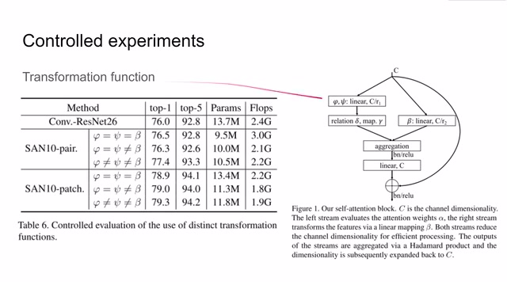
00:12:43–00:12:44 · 画面 04400:12:44–00:13:08 · 画面 045
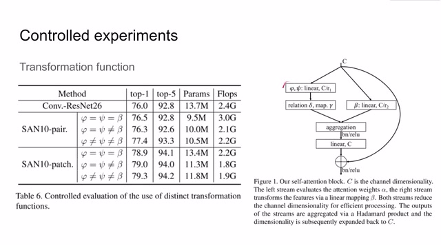
00:12:44–00:13:08 · 画面 04500:13:08–00:13:18 · 画面 046
00:13:08–00:13:18 · 画面 046那么随后作者还讨论使用多大的 footprint 来适合我们的网络，这里的 footprint 其实就像我们 convolution 里面的 kernel 一样。那么这里作者也是汇报了一堆实验结果。那么作者同时还讨论的 position encoding ，也就是图像位置的编码。你看到如果没有位置编码，那么这个表现很差的。如果我们使用绝对的 index ，就是从 0 1 2 3 这样子的 index 来编码，那么它的表现也是很差的。
00:13:18–00:13:22 · 画面 047
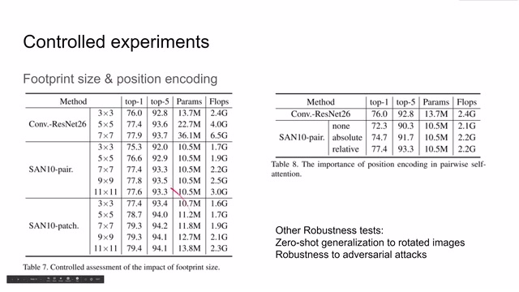
00:13:18–00:13:22 · 画面 04700:13:22–00:14:48 · 画面 048
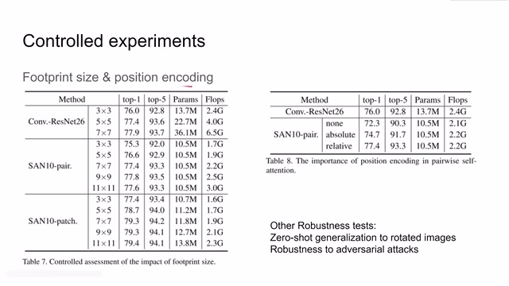
00:13:22–00:14:48 · 画面 048但是如果我们使用了这种-1 到 1 这种相对的图像位置的编码，那么它的性能就会好一些。所以说这个表格也就论证了 position encoding 在 attention 机制中的重要性，包括后面的 transformer 等等，因为它内部的运算都是全连接层，它并不能够很好的保留原始的图像的位置的信息。其实这也就从另一个角度论证了说为什么 Convolution 它就能 work 因为在 Convolution 的过程中你是能够维持这一个 patch 之中各个像素之间的位置的关系的
那么此外呢作者还测试了这个模型的鲁棒性比如说 Zero-Shot Generalization to Rotated Images 就是直接把图像转个 90 度转个 270 度这样子那么肯定的这种旋转对于传统的抗恶势能的方法呢影响是非常大的那对于 Self-Attention 呢影响呢就不是那么巨大那么同时呢作者也测试了这个网络对于对抗攻击的鲁棒性这个呢肯定是非常鲁棒的因为之前大家研究的方法都是针对抗恶势能的攻击方法嘛并没有人提出对这个全是 self-attentionblock 的这个网络进行攻击，所以他自然也是非常鲁胖的。OK，那么回到这篇论文的结论。
00:14:48–00:14:49 · 画面 049
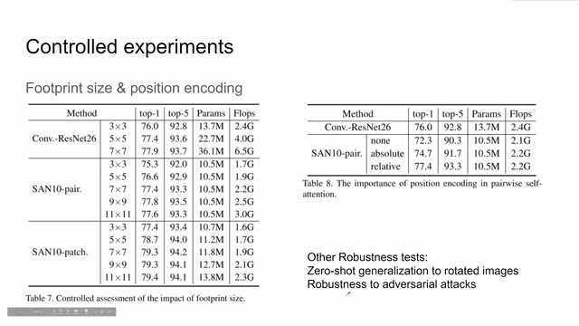
00:14:48–00:14:49 · 画面 04900:14:49–00:14:51 · 画面 050
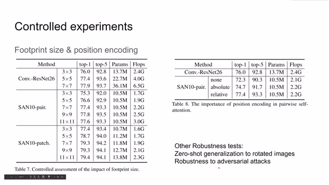
00:14:49–00:14:51 · 画面 05000:14:51–00:14:54 · 画面 051
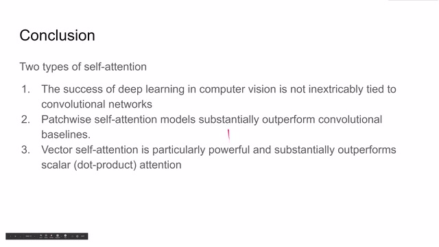
00:14:51–00:14:54 · 画面 051首先这篇论文提出了两种形式的 self-attention 一个是 pairwise 一个是 patchwise 那么非常难能可贵的是作者尝试了使用不同的 relation function 不同的 transition function 等等等等这些东西来尝试出我们应该如何设计使用 self-attention block 而且这个 self-attention networks 取得了和 conventional neural networks 相媲美甚至 outperform 这些传统的 CNN 的成绩那么作者就说我们 computer vision 中的 deep learning 的
00:14:54–00:16:30 · 画面 052
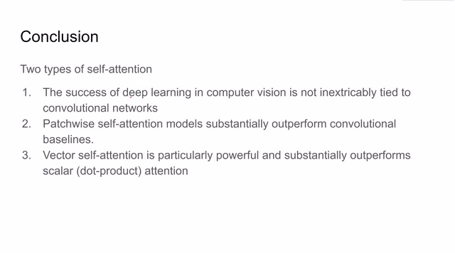
00:14:54–00:16:30 · 画面 052并不只是因为这个卡纹路线道才成功的对吧我们还是有很多种其他的成功的途径第二步线呢就是提出的 patchwise self-attention 那么这个 module 呢是要比原来的 CNN baseline 要好的那么最后呢作者这里也提出了 vector selfattention 是比这种 scalarattention 要好很多的因为你的一个 block 输出一个 vector 它存在更多的信息可以给后面的 block 来使用那么这样呢就比你这种单纯只输出一个数值的这种 attention 要
强大很多。那么总的来看，首先这篇文章做的工作是非常扎实的，他比较全面的汇总了我们 selfattention 如何设计 selfattention 这一个 module 这么一个 block。那么随后呢，他的实验也支持说我们使用 selfattention 呢可以完全替代 convolution，也就是说 convolution 并不是 deep learningcomputer vision 的唯一解。那么这也跟现在流行的 transformer 这个趋势呢是相契合的。
大家通过多种渠道来探索 deep learning 的可能性，这本来也是一个非常好的事情。好的，那么以上就是我对这篇论文的简单的分析，感谢您的收看，再见。
00:16:30–00:16:30 · 画面 053
00:16:30–00:16:30 · 画面 053转写与来源说明 · 0 个自动复核提示
保留 38 个原始语音片段，0 个片段触发自动复核提示。提示仅用于定位可能的术语、重复或识别问题，不等于已确认错误。
讲解画面为源视频截图（640×360），不是可编辑 PPT 文件。全片按每秒 2 帧扫描内容变化，逐步展开页保留；连续动画保留代表画面。清晰度受源视频限制。
原视频：paper/合集_2026-10-16_新模型/[论文简析]Exploring Self-attention for Image Recognition[2004.13621].mp4
SHA-256：b1f60ddeba859c1b76f1c40582d6523a46df25122a7b9fcc95a915bbafa5d9aa
全文按视频语音与画面制作。原论文可从上方链接下载；完整资料包保留全文、原始逐字稿、字幕和校对记录。